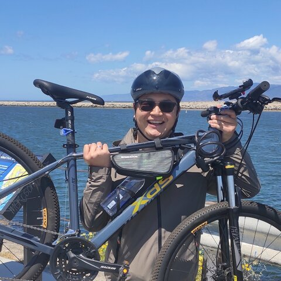
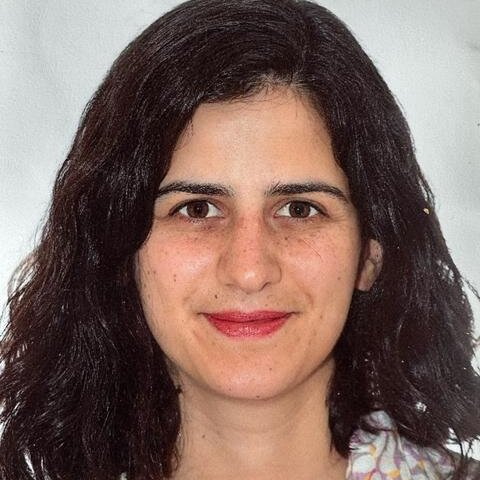

Foundation Models &
Agentic Methods for
Astrophysical Simulation
A KAAI Workshop · Carnegie Mellon University
Overview
About the workshop
Astrophysics and cosmology increasingly rely on large-scale simulations to connect theory with noisy, high-dimensional, unstructured observations. Two developments are making that connection more tractable. Foundation models, which learn transferable representations from large, heterogeneous datasets, are a natural fit for representing, compressing, and analyzing astrophysical data. Agentic methods, meanwhile, are beginning to reshape scientific workflows, expanding analysis capacity while raising open questions about how such tools can be used responsibly in astronomical research. Both directions face challenges: foundation models are limited by scarce ground-truth data and simulations, while agentic methods must contend with tasks that are often non-verifiable or computationally expensive. This workshop brings together researchers working on both fronts to discuss these challenges and where the field is headed.
- Foundation models for astrophysics: representing, manipulating, compressing, comparing, and interpreting astrophysical data, from simulations to observations.
- Agentic science loops: how agentic methods can responsibly augment the astronomical research process.
This is a Keystone Astronomy & AI (KAAI) Fellows Program workshop, sponsored by the Simons Foundation Targeted Grant to Institutes.
Registration
Registration
Registration is free. Because in-person capacity is limited, registrations will be approved on a rolling basis. We encourage you to register early to guarantee your spot.
The form will remain open through Monday, August 24.
Register nowQuestions? Contact mah2406@columbia.edu.
Location
Location & Directions
All workshop meetings will be held in Wean Hall 8300, Carnegie Mellon University.
Wean Hall
Carnegie Mellon University
5000 Forbes Avenue
Pittsburgh, PA 15213
Directions to Room 8300
- Enter Wean Hall through the main entrance on the 5th floor (view entrance location on Google Maps).
- Take the main elevators or central stairs up to the 8th floor.
- Follow the hallway signs to Room 8300 (Department of Physics / McWilliams Center).
Format
Conference + Hackathon
Mon–Tue · Aug 31–Sep 1
Conference
Invited talks and discussion on novel research at the intersection of foundation models, agentic methods, and astrophysical simulation.
Wed–Thu · Sep 2–3
Astro+AI Hackathon
A Pittsburgh-wide hackathon open to CMU/Pitt participants across physics and ML. See below for details.
Speakers
Invited speakers
More speakers to be announced.
François Lanusse
Researcher · CNRS

Yadi Cao
Postdoctoral Researcher · UC San Diego
Jack O’Brien
Postdoctoral Researcher · UIUC

Carolina Cuesta-Lazaro
Assistant Professor · New York University
Anuj Karpatne
Associate Professor · Virginia Tech
Francisco Villaescusa-Navarro
Research Scientist · CCA, Flatiron Institute
Hackathon
Astro+AI Hackathon
A Pittsburgh-wide hackathon open to CMU/Pitt participants across physics and machine learning.
Track structure, prizes, team formation, judging criteria, submission process, and compute resources are still being finalized and will be announced soon.
Committee
Organizing committee
Columbia University, Department of Astronomy
Carnegie Mellon University, Machine Learning Department
Carnegie Mellon University, Department of Physics
Carnegie Mellon University, Department of Physics
Carnegie Mellon University, Department of Physics
Carnegie Mellon University, Department of Physics